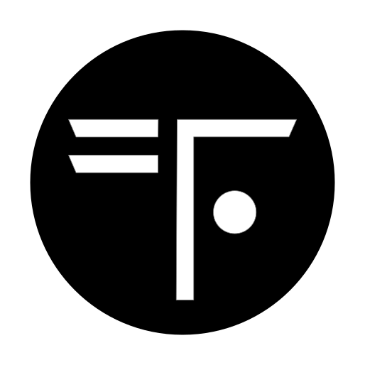
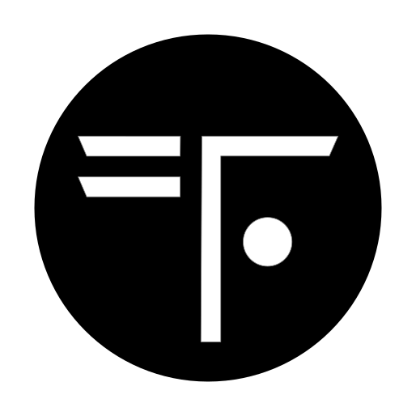

TERRAFORM COALITION
"WE SEE EARTH DIFFERENTLY"
Every day, nearly 400,000 new lives take root on planet Earth. Global population is set to surge past 10 billion before growth begins to stabilize. Depletion—ruthlessly outpacing recovery—defines our most critical challenge. Humanity has overstretched Earth's resources by a staggering 70%—effectively using 1.7 Earths. The limits of growth have been crossed. The challenge has fundamentally changed, but we still haven’t realized the stark reality. Conservation—our presumed strategy—was an opportunity lost half a century ago when we crossed the 4 billion mark. Thus, We haven't just fallen behind on sustainability challenges; we've missed the alarm entirely. This, however, is not a story of doom. It is the inception of the greatest endeavor humanity will ever have to undertake: to co-create with Earth the evolution of our life-support systems. What nature has meticulously crafted over eons, we must now heal and augment within the course of our lifetimes. Welcome to the dawn of terraforming—ecosystem as a service.